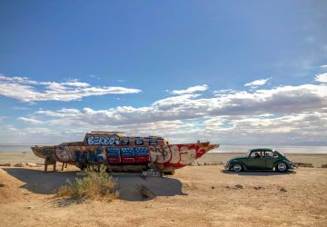
Bombay Beach: On the Shores of the Salton Sea
Anna began her career as a graphic designer and darkroom-educated photographer. She took a detour for fifteen years into real estate development and project management, with a special interest in older homes. Seeking a change after the pandemic, Anna began working in digital communications at the University of Tennessee, Knoxville. She still enjoys working closely with designers on her team, but is a Certified Scrum Master | Project Manager helping plan digital transforamtion work across campus. She nourishes her creative side with community involvement teaching historic and alternative photography!
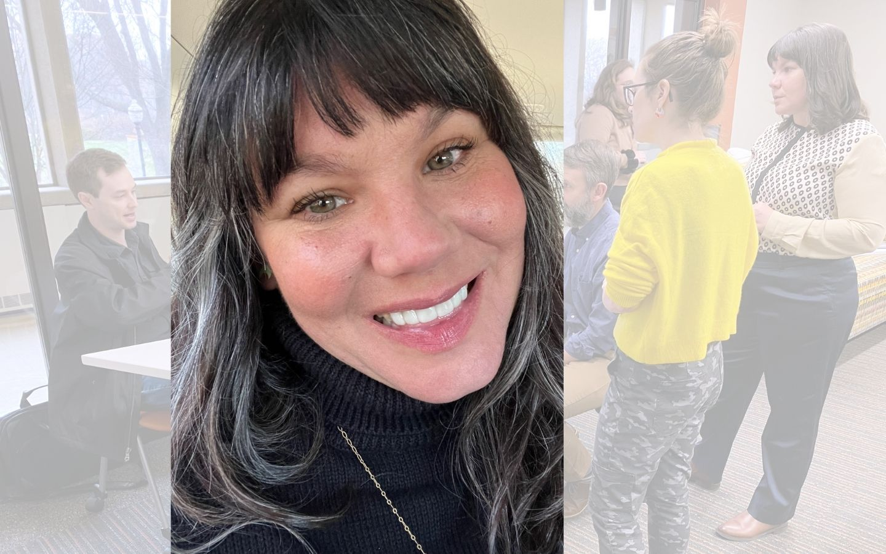
Giving back to her community is important for Anna, and nearly a decade ago she co-founded The Big Camera to bring the magic of alternative photography to kids in the Knoxville area. Programming soon expanded into teaching at local colleges, partnering with other non-profits to fundraise with mural installations, demonstrating alternative processes across East Tennessee, and curating Obscura: a show to exhibit local alt-photography artists.
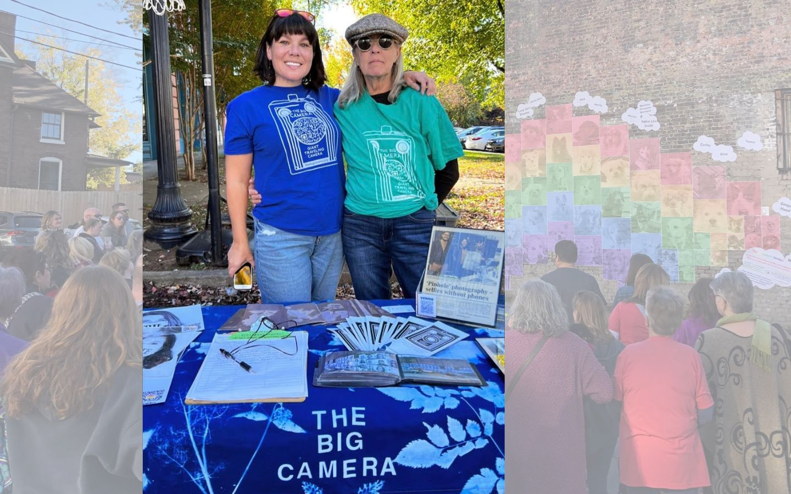
Anna will completed her Master of Science in Communication and Information at UTK in 2025, and focused recent career development in psychological safety in the workplace. She is excited to apply her experience and education in a leadership capacity, building resilient teams and establishing strong stakeholder trust.
Personally, she is excited about upcoming trips to California and through-hiking along the Appalachian Trail. She's additionally looking forward to sharing her work in Knoxville's Small Press Fest.

Bombay Beach: On the Shores of the Salton Sea
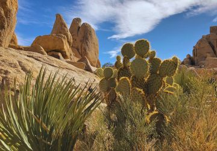
Opuntia chlorotica: Joshua Tree National Park
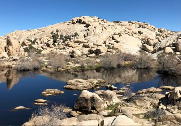
Barker Dam: Joshua Tree National Park
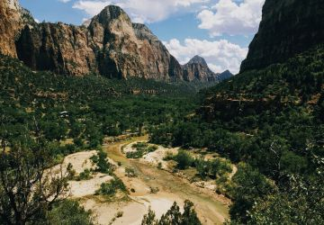
The Virgin River: Zion National Park
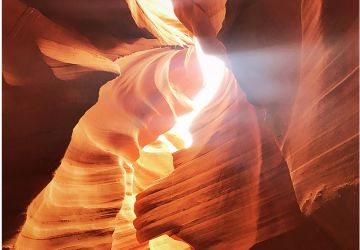
Dine' kéyah: American Southwest
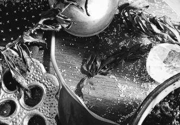
Practical Magic: Black and White film print on Ilford paper
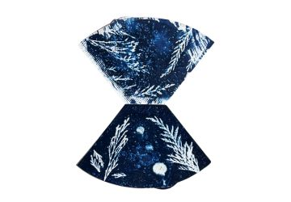
Time Waits: Cyanotype botanical print on unbleached coffee filters
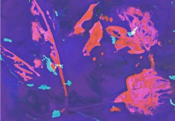
Burnt Out: Lumen print of peonies on expired color darkroom paper
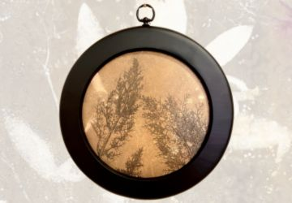
Through the Round Window: Gelli print on exposed expired darkroom paper
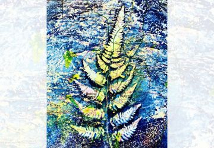
Pendernales Falls: Cyanotype and watercolor on a Texas roadmap
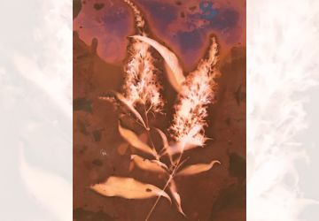
Illusions: Spilled soda water and lumen print of Buddleja davidii on expired darkroom paper
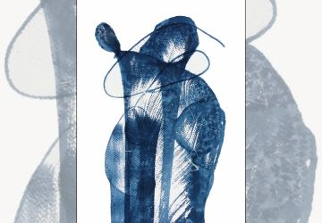
She Dances: Cyanotype on watercolor paper
Selected works and publications of interest.
Alternative and Analog Photography Group Show, Curator and Exhibitor
The Emporium Gallery, Knoxville, TN
September 2023, 2020, 2019
Time Based Media Production
wild life
Broadway Gallery, Knoxville, TN
May 2022
Large Format Outdoor Mural Design
Commissioned by Small Breed Rescue of East Tennessee
Knoxville, TN
November 2021
Altered Digital Portrait
Three Acts: A Survey of Shame, Emotion and Oblivion
Curator: Mark Sink
RedLine Art Center, Denver, CO
March 2021
Wet Plate Collodion Photogram
The Pigeon Parade Quarterly: Good
Juror: Paris Woodhull
March 2021
Ultra Large Format Lumen Print and Chemogram
The Pigeon Parade Quarterly: Exploration
Juror: Rhea Carmon
December 2020
Large Format Outdoor Mural and Lead Photographer
Funded partially by Knox County Commission and Wide Lens Media
Knoxville, TN
September 2020
Large Format Outdoor Mural and Lead Photographer
In partnership with Donna Headrick Moore and A1LabArts
Knoxville, TN
June 2019
Video Footage from WBIR
Ijams Nature Center, Knoxville, TN
September 2022
A. Smith Gallery, Johnson City, TX
2020
PhotoNOLA, New Orleans, LA
2017